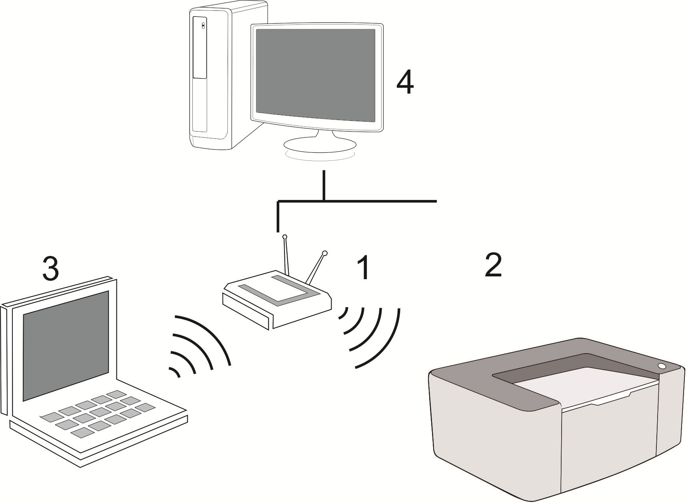
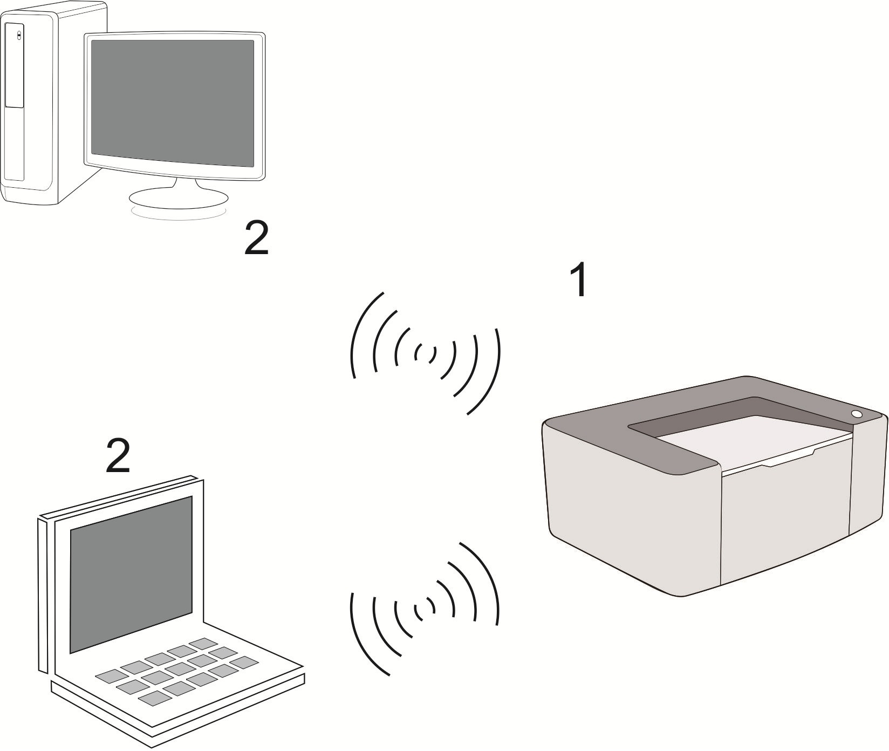
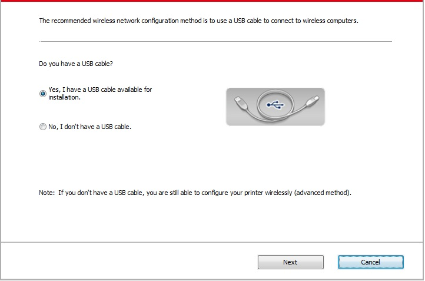
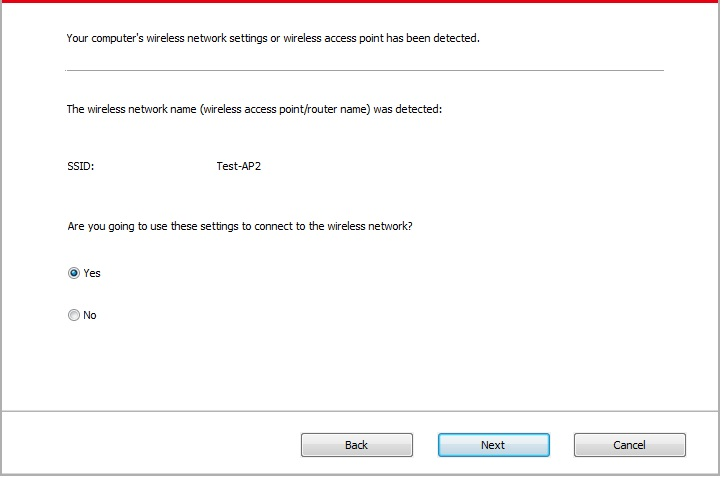
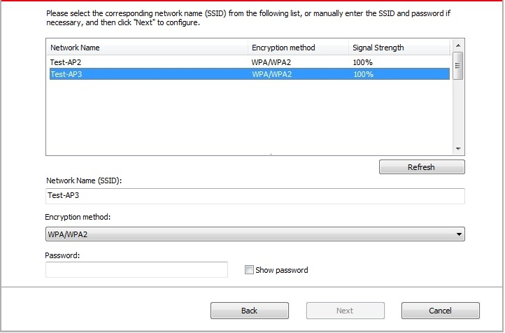
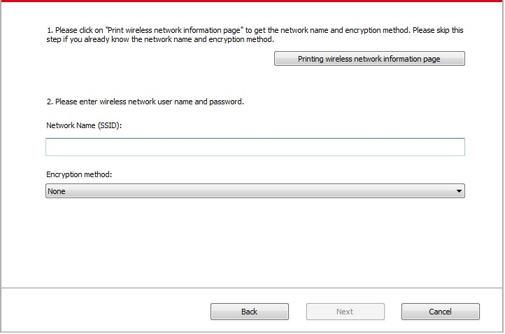
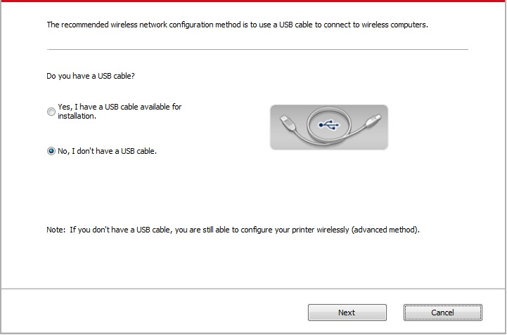
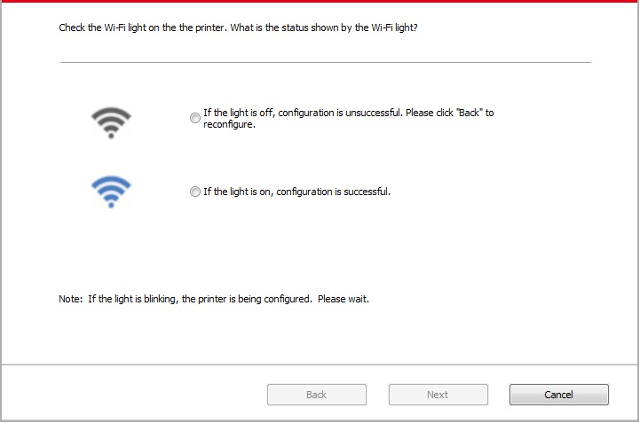

5. 무선 네트워크 설정 (Wi-Fi 모델에 해당)
모델에 따라 Wi-Fi 인쇄 기능이있는 프린터는 인프라 연결 모드와 Soft-AP의 두 가지 유형의 무선 네트워크 연결을 지원합니다. 일반적으로 컴퓨터와 프린터는 한 번에 단 하나의 연결만 있습니다. 무선 네트워크 설정 중 문제가 발생하면 5.3 장 무선 네트워크 설정에 대한 FAQ를 참조하십시오.
|  | 기본 구조 모드 : 라우터를 통해 무선 장치에 연결 1. 액세스 포인트 (무선 라우터). 2. 무선 네트워크 프린터 3. 무선 네트워크를 통해 액세스 포인트에 연결하는 컴퓨터. 4. 네트워크 케이블을 통해 액세스 포인트에 연결하는 컴퓨터. |
|
 |
Soft-AP 무선 컴퓨터가 무선 장치에 직접 연결되어 있습니다. |
5.1. 기본 구조 모드
액세스 포인트 (무선 라우터)를 매개로 사용하여 컴퓨터에 프린터를 연결할 수 있습니다. 액세스 포인트 (무선 라우터) 연결은 무선 네트워크 설정과 WPS (Wi-Fi Protected Setup)로 구분됩니다.
중요 사항 : 무선 네트워크를 설치하기 전에 무선 네트워크 설정 중에 액세스 포인트의 서비스 세트 ID (SSID)와 암호를 알아야합니다. 네트워크 관리자 또는 액세스 포인트 (무선 라우터) 제조업체에 문의하십시오.
5.1.1. 무선 네트워크 설정 도구
컴퓨터에 드라이버가 설치되어 있고 무선 네트워크에 연결되어 있지만 무선 네트워크가 변경된 경우 무선 네트워크 설정 도구로 다시 설정할 수 있습니다.
5.1.1.1. 예비 준비 사항
1. 액세스 포인트 (무선 라우터).
2. 네트워크에 연결된 컴퓨터.
3. 무선 네트워크 기능이 있는 프린터.
5.1.1.2. 무선 네트워크 설정 도구의 설치 방법
1. 컴퓨터의 무선 네트워크 설정 도구를 불러옵니다.
1) Windows 시스템 : "시작 메뉴"- "모든 프로그램"- "Pantum"- 제품 이름 - "무선 네트워크 설정 도구"를 클릭하십시오.
2) Mac 시스템 : 컴퓨터 찾기 도구 모음에서 "이동"- "응용 프로그램"- "Pantum"- "유틸리티"- "무선 네트워크 구성 도구"를 클릭하십시오.
2. USB 케이블을 사용하여 연결하고 설정하십시오.
다음 인터페이스에서 "예, 설치에 사용할 수있는 USB 케이블이 있습니다"를 선택하십시오. "다음"을 클릭하십시오.

2.1 컴퓨터가 무선 네트워크에 연결되었습니다.
1) 현재 컴퓨터에 연결된 무선 네트워크는 기본적으로 선택된 무선 네트워크 구성 도구입니다. 인터페이스 프롬프트에 따라 설정을 완료하십시오.

 |
주의: |
• 선택한 SSID는 컴퓨터에 연결된 액세스 포인트 (무선 라우터)의 SSID와 일치해야합니다. |
2) 연결에 필요한 다른 무선 네트워크를 구성하려면 "아니오"를 선택하십시오. 인터페이스 프롬프트에 따라 설정을 완료하십시오.

|
주의: |
• 현재 이 프린터는 세 가지 유형의 안전 모드를 지원합니다: 없음, WEP 및 WPA / WPA2 1) 없음 : 사용한 암호화 방법이 없습니다. 2) WEP : WEP (Wired Equivalent Privacy)를 사용하여 보안 키를 통해 데이터를 주고 받습니다. WEP 키는 64 자리 및 128 자리의 암호화 된 네트워크에 적용되며 숫자와 문자를 동시에 포함 할 수 있습니다. 3) WPA / WPA2 : TKIP 또는 AES 암호화 (WPS- 개인)를 통해 무선 장치와 액세스 지점을 연결하는 Wi-Fi 보호 액세스의 사전 공유 키 (PSK)입니다. WPA / WPA2의 작동 길이는 8-63 자의 PSK 범위 내에 있습니다. • 암호 표시는 기본적으로 체크 되어있지 않습니다. 체크된 경우 모든 암호 입력을 일반 텍스트로 볼 수 있습니다. |
2.2 컴퓨터가 무선 네트워크에 연결되어 있지 않습니다.
아래 인터페이스에서 액세스 포인트 (무선 라우터)의 SSID (대소 문자 구별)와 암호를 입력하십시오. 인터페이스 프롬프트에 따라 설정을 완료하십시오.

|
주의: |
• 액세스 포인트 (무선 라우터)의 SSID를 모르는 경우 "무선 네트워크 정보 페이지 인쇄"를 클릭하여 필요한 액세스 포인트 (무선 라우터)의 SSID를 확인하십시오. • 무선 네트워크 설정이 완료된 후 프린터를 정상적으로 사용할 수 없는 경우 드라이브를 다시 설치하십시오. |
3. WPS 연결을 사용하십시오.
아래 인터페이스에서 "아니오, USB 케이블이 없습니다"를 선택하고 "다음"을 클릭하십시오.

1) WPS 방법을 사용하여 프린터에서 무선 네트워크를 시작하려면 아래 단계를 수행하십시오. (자세한 WPS 구성은 5.1.2장을 참조하십시오)

2) 프린터의 Wi-Fi 표시등의 상태에 따라 프린터가 성공적으로 연결되었는지 판단합니다. 구성이 실패한 경우 "이전"을 클릭하여 다시 시도하십시오. 구성이 완료되면 "완료"를 클릭하십시오.

|
주의: |
• 무선 네트워크 설정이 완료된 후 프린터를 정상적으로 사용할 수 없는 경우 드라이브를 다시 설치하십시오. |
5.1.2. WPS(Wi-Fi Protected Setup) 설정
액세스 포인트 (무선 라우터)가 WPS (Wi-Fi Protected Setup)를 지원하면 프린터의 제어판에 있는 Wi-Fi 키와 액세스 포인트 (무선 라우터)의 WPS 키를 눌러 프린터를 무선 네트워크에 연결할 수 있습니다.
5.1.2.1. 예비 준비 사항
1. 액세스 지점 (무선 라우터)은 WPS (Wi-Fi Protected Setup)를 지원합니다.
2. 무선 네트워크 기능이있는 프린터.
5.1.2.2. Wi-Fi Protected Setup (WPS) 방법 :
1. 프린터 및 액세스 포인트 (무선 라우터)의 전원을 켜십시오.
2. 프린터가 준비 상태인지 확인하십시오.
|
주의: |
• 프린터가 절전 모드이면 프린터 제어판에서 아무 키나 눌러서 절전 모드를 해제 할 수 있습니다. |
3. 프린터 제어판에서 "Wi-Fi"키를 2 초 이상 눌러 "Wi-Fi 연결" 인터페이스가 나타나면 "CON RT to WPS"를 선택하십시오.
4. 2분 이내에 액세스 지점(무선 라우터)에서 WPS 키를 누른 눌렀다 때십시오.
5. 액세스 지점 (무선 라우터)과 프린터가 연결되기 시작하면 프린터의 파란색 Wi-Fi 표시기가 깜박이기 시작합니다. 연결에 성공하면 프린터의 파란색 Wi-Fi 표시기가 정상적으로 켜집니다.
2분 이상 연결이 되지 않으면 프린터가 준비 상태로 돌아가고 Wi-Fi 표시기가 꺼지고 WPS (Wi-Fi Protected Setup) 연결이 실패합니다. 다시 연결해야하는 경우 위의 3 ~ 4 단계를 반복하십시오.
|
주의: |
• Wi-Fi Protected Setup (WPS) 연결이 성공한 후 무선 네트워크를 통해 인쇄하려면 드라이버를 설치하십시오. |
5.1.3. 연결된 Wi-Fi 네트워크를 비활성화하는 방법
위 단계에 따라 인프라 모드에서 무선 네트워크 연결을 완료하십시오. 연결되어 있으면 상태 제어판의 Wi-Fi 표시기가 항상 켜져 있습니다. 연결을 해제하려면 이 키를 2 초 이상 누르십시오. (Wi-Fi 표시기가 꺼짐).
5.2. Wi-Fi 핫스팟 모드
액세스 지점 (무선 경로)을 사용하지 않고 무선 네트워크 사용 가능 컴퓨터와 무선 네트워크 사용 가능 프린터간에 연결을 설정할 수 있습니다.
5.2.1. 예비 준비 사항
1. Wi-Fi 핫스팟 프린터.
2. 무선 네트워크 컴퓨터.
5.2.2. Wi-Fi 실시간 연결
프린터를 실시간으로 연결하기 전에 프린터의 실시간 Wi-Fi를 활성화하십시오. 이를 위해 내장 웹 서버에 로그인하고 "설정"- "무선 설정"- "무선 Hot"을 클릭하여 핫의 기본 상태를 "사용함"으로 설정합니다.
5.2.3. Wi-Fi 핫스팟 구성
프린터의 무선 핫스팟이 활성화되면 사용자는 검색을 통해 직접 연결할 수 있습니다. 무선 핫스팟은 기본적으로 사용되며 기본 암호는 "12345678"입니다. 프린터 별 SSID 및 암호는 Wi-Fi 구성 정보 페이지에서 가져올 수 있습니다. Wi-Fi 구성 정보 페이지는 Wi-Fi 구성 인쇄를 선택하여 인쇄 할 수 있습니다. 연결을 설정 한 후 웹 구성 방법에 따라 구성을 완료 할 수 있습니다.
5.3. 무선 네트워크 설정 관련 자주 묻는 질문
1. 프린트를 찾을 수 없습니다.
• 컴퓨터, 액세스 포인트 (무선 라우터) 또는 프린터의 전원이 켜져있는 경우
• 컴퓨터가 USB 케이블로 프린터에 연결되어 있는 경우.
• 프린터가 무선 네트워크 연결을 지원하는 경우.
2. 네트워크 연결시 SSID를 찾을 수 없음.
• 액세스 포인트 (무선 라우터)의 전원 스위치가 켜져 있는지 확인하십시오.
• 프린터가 연결할 액세스 포인트 (무선 라우터)의 SSID를 찾을 수 없는 경우 액세스 포인트의 SSID를 확인하고 다시 연결을 시도하십시오.
• 액세스 포인트 (무선 라우터)의 설정이 변경 될 때마다 프린터의 무선 네트워크를 다시 설정해야합니다.
3. 연결 실패
• 액세스 포인트 (무선 라우터)와 프린터의 안전 모드와 암호가 올바른지 확인하십시오.
• 프린터 주위의 무선 수신을 검사하십시오. 라우터가 프린터에서 떨어져 있거나 장애물이있는 경우 신호 수신에 영향을 줄 수 있습니다.
• 액세스 포인트 (무선 라우터) 및 프린터의 전원을 끈 다음 재시작 후 다시 설정하십시오.
4. 네트워크에서 프린터를 사용할 때 문제가있는 경우 다음과 같은 사항을 검사해야합니다:
• 방화벽 소프트웨어가 통신을 차단하는지 검사하십시오. 컴퓨터와 프린터가 같은 네트워크에 연결되어 있지만 검색 할 수 없으면 방화벽 소프트웨어에 의해 통신이 차단되었을 수 있습니다. 방화벽 소프트웨어의 사용 설명서를 참조하여 방화벽을 끈 다음 프린터를 다시 검색하십시오.
• 프린터의 IP 주소 할당이 올바른지 확인하십시오. 프린터의 네트워크 설정 정보 페이지를 인쇄하여 IP 주소를 확인 할 수 있습니다.
• 프린터와 컴퓨터가 동일한 네트워크에 있는지 확인하려면 다음 단계를 참조하십시오:
1) 아래와 같이 "명령 프롬프트"를 선택하십시오.
a. Windows 8/10 시스템 : 시작 메뉴에서 "검색" 버튼을 선택하고 검색 창에 "명령 프롬프트"를 입력 한 다음 키보드의 "Enter" 버튼을 누릅니다.
b. Windows 7 / Vista / XP 시스템 : "시작"메뉴 - "모든 절차"- "첨부 파일"- "명령 프롬프트"를 클릭하십시오.
2) 팝업 창에 핑과 프린터 IP 주소를 입력하고 "Enter" 버튼을 눌러주십시오.
예 : ping XXX.XXX.XXX.XXX ( "XXX.XXX.XXX.XXX"는 프린터 IP 주소 임)
3) RTT가 창에 표시되면 프린터와 컴퓨터가 동일한 네트워크에 있는 것입니다. RTT가 창에 표시되지 않으면5장을 참조하여 프린터 무선 네트워크를 다시 구성하십시오.
|
주의: |
• 액세스 포인트 (무선 라우터)와 관련된 정보는 사용 설명서를 참조하거나 제조업체에 문의하십시오. |